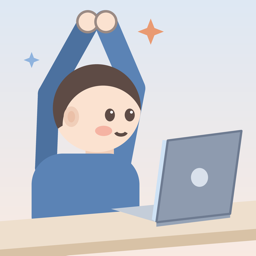

こっそりのび
座ったまま、こっそりひとのび。
デスクワークの合間に、座ったまま1〜3分。周りに気づかれにくいストレッチで、座りっぱなしをこまめに区切る休憩アプリです。
App Store でダウンロード 無料 ｜ ユーザー登録なし
『こっそりのび』でできること
🪑 座ったまま・音なしで、1〜3分
長さを選んで押すだけで、おまかせのストレッチが始まります。「こっそりモード」をオンにすると、隣の席から見ても目立たない動きだけに。人形のお手本を見ながら、そのまま真似できます。
⏰ ちょうどいいときにお知らせ
仕事の時間と1日の目標回数から、休憩するとよい時刻にお知らせします。「バイブだけ」なら会議中でも安心。最近歩いていたら、次のお知らせを後ろにずらします。
🙋 のび友と「休憩しよ？」
家族や同僚と招待コードでつながって、「休憩しよ？」と声をかけ合えます。「やる！」と返事が来たら、ストレッチ部屋で3・2・1、一緒にスタート。終わったら拍手を送り合えます。
📈 がんばりが目に見える
今日の休憩の回数、今週のペース、のび友と一緒にのびた回数をふり返れます。
🔒 安心して使えるように
ユーザー登録は不要。休憩の記録や設定は、あなたの iPhone の中だけに保存されます。のび友に見えるのは、あなたが決めた名前とアイコンだけです。
『こっそりのび』の考え方
仕事中、気づけば何時間も座ったまま。こっそりのびは、その時間を「ちょっとだけ」区切るためのアプリです。
- 席を立たなくても、座ったままできること
- 周りの目を気にせず、こっそりできること
- 1回1〜3分。仕事の手を止めすぎないこと
- ひとりで続かなくても、のび友と声をかけ合えること
ご利用にあたって
痛み・しびれ・めまいを感じたら、すぐに中止してください。体に不安がある方は、医師にご相談のうえご利用ください。本アプリは医療機器ではなく、病気の診断・治療・予防を目的としたものではありません。
公式アカウント・お問い合わせ
公式X：@kossorinobi_app 最新情報をお知らせします
お問い合わせ：kossorinobi.app@outlook.com
よくある質問
のび友とつながれません
iPhone の設定で iCloud にサインインしているか確認してください。のび友機能は iCloud を使います。
機種変更するときは？
アプリの「設定」→「バックアップを書き出す」で保存したファイルを、新しい iPhone で読み込んでください。
iCloud 上の名前・写真・招待コードを消したい
上のメールアドレスまでご連絡ください。
Kossori Nobi
A quiet stretch, right at your desk.
Take 1–3 minute seated stretch breaks that people around you won’t notice, and break up long hours of sitting.
Download on the App Store Free | No sign-up
What you can do
🪑 Seated and silent, 1–3 minutes
Pick a length and tap to start a stretch chosen for you. Turn on Sneaky mode for moves your neighbors won’t notice, and follow the animated figure.
⏰ Reminders at the right time
Based on your work hours and daily goal, the app reminds you when it’s time for a break. Use vibrate-only during meetings. If you’ve walked recently, the next reminder moves back.
🙋 “Break time?” with friends
Connect with family or coworkers by invite code and invite each other to take a break. When they reply “I’m in!”, count down 3-2-1 in the stretch room and start together, then send each other a clap.
📈 See your progress
Look back on today’s breaks, this week’s pace, and how often you stretched with friends.
🔒 Private by design
No sign-up. Your records and settings stay on your iPhone. Friends only see the name and photo you choose.
Before you start
Stop right away if you feel pain, numbness, or dizziness. If you have health concerns, talk to a doctor first. This app is not a medical device and does not diagnose, treat, or prevent any condition.
Contact
X: @kossorinobi_app
Email: kossorinobi.app@outlook.com